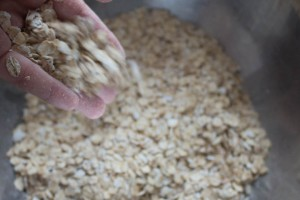
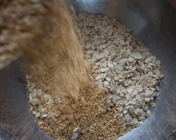
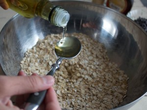
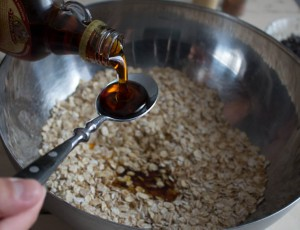
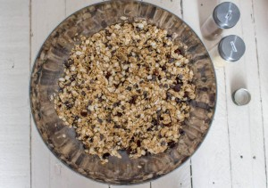
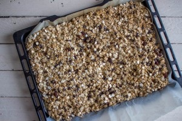
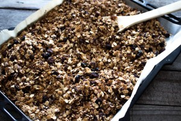
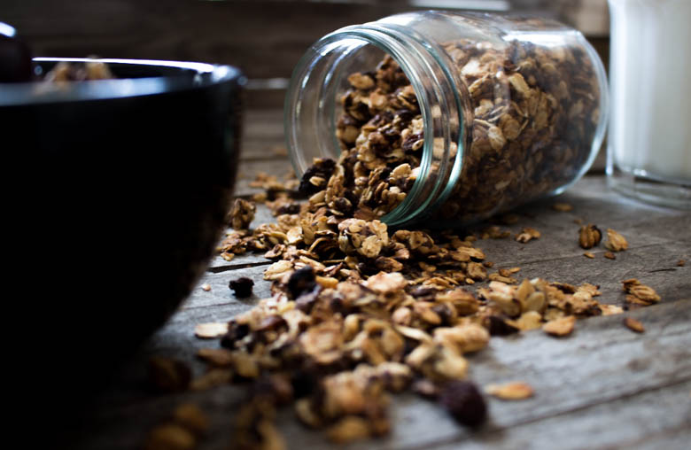
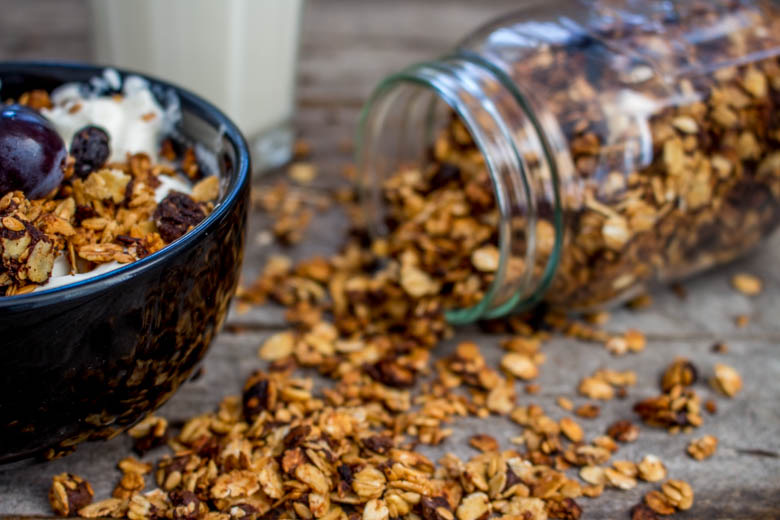

Granola Homemade

Pour bien commencer la semaine rien de mieux que du granola et homemade c’est encore mieux!
Il y a quelques temps de ça, nous sommes allés bruncher chez plume à Bordeaux (article ici) et nous avons eu droit à du granola fait maison! Je n’en achète pas car je trouve que dans le commerce ils sont bien trop sucrés contrairement à celui de chez Plume qui était vraiment délicieux. Je me suis suis donc mis en tête de réaliser mon propre granola.
Ce jour là, je me suis d’ailleurs demandée quelle était la différence entre du granola et du muesli. La première étape est donc de connaitre exactement les différences avec le muesli. En réalité, le muesli et le granola sont tous deux un mélange de céréales, d’oléagineux et de fruits secs (et éventuellement quelques pépites de chocolat, noix de coco râpée etc…). La différence est que le granola est plus sucré (avec du miel, ou du sirop d’agave ou encore du sirop d’érable etc..), plus gras car il contient de l’huile (huile de noisette, de noix etc..) et est enfin toasté au four afin de lui donner son côté croustillant.
Alors certes le muesli est bien plus « diététique » mais je préfère sans conteste le granola que je trouve plus gourmand et moins sec que le muesli!
A l’époque où mon chéri révisait ses cours, je lui préparé un grand bol de granola avec du yaourt grec et je peux vous dire qu’il tenait toute la matinée sans avoir faim et sans être fatigué!
Sur le net on trouve un paquet de recettes différentes et j’avais envie de faire la mienne avec toutes les choses que j’aime! C’est maintenant chose faite et je ne peux plus m’en passer (et mon chéri non plus)!!
Je vous laisse découvrir ma version du granola et j’espère qu’elle vous plaira! Un grand merci à la maman de mon chéri qui nous a passé de très jolies cuillères 🙂
Ingrédients
- Flocons d'avoine - 320g
- Graines de lin - 220g
- Pépites de chocolat - 135g
- Raisins secs - 130g
- Sirop d'érable - 7càs
- Huile de noix - 3càs
- Extrait de vanille - 1càc
- Gingembre - 1càc
- Cannelle - 1càs
Instructions
- Dans un grand saladier verser les flocons d'avoine
- Ajouter les graines de lin
- Verser l'huile de noix et mélanger pour que toutes les graines soient correctement imbibées
- Verser le sirop d'érable et mélanger afin de le répartir de façon homogène dans le mélange
- Préchauffer le four à 100°
- Déposer du papier cuisson sur la plaque de votre four
- Verser le mélange dessus et le répartir uniformément sur la plaque du four
- Enfourner 30 à 40 minutes et en remuant très régulièrement le mélange. Surveiller la cuisson avec beaucoup d'attention Goûter de temps à autre pour obtenir le "croquant" que vous souhaitez. (Si vous aimez votre granola très très croquant laisser cuire pendant 45 bonnes minutes)
- Laisser refroidir et ajouter les raisins secs ainsi que les pépites de chocolats si vous ne les avez pas mis pendant la cuisson
- Manger sans modération









Les tips de la communauté
Le Granola Homemade reçoit des commentaires encourageants avec appréciation pour le côté maison et les bénéfices de faire son propre granola.
Astuces
- Bien mélanger tous les ingrédients avant la cuisson
- Surveiller la cuisson pour éviter un brûlage et obtenir un dorage uniforme
- Stocker dans un récipient hermétique après refroidissement complet
Variantes suggérées
- Ajouter différents fruits secs et oléagineux selon les goûts
- Varier le miel ou utiliser du sirop d'érable pour une saveur différente
Ajustements signalés
- que j’en face aussi
- essayer car ça ne demande pas beaucoup de temps et tu ne seras pas déçue du résultat!! Bisous